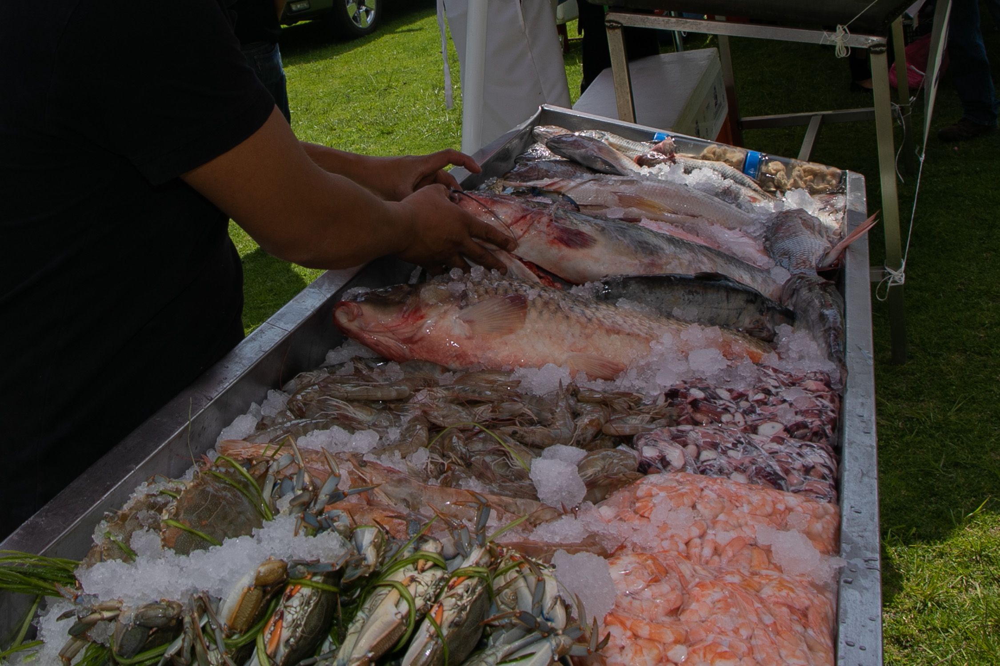
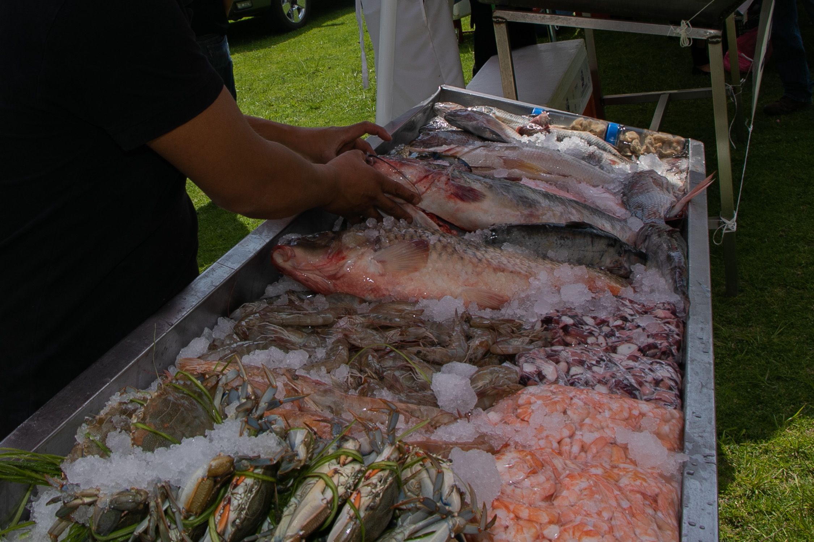

Actractivos Turisticos
Volcán Xinantécatl
La maravilla del Volcán Xinantécatl es que esta inactivo tiene sus lagunas a los lados ,tiene un poco de hielo
antes de llegar a el se encuantran cabañas en las cuales te peudes hospedar y/o hacer tu parrillada
.


 Turismo
Turismo
Platillos
Platillos
Si visitas la zona centro ddel municipio no olvides pasar a gustar una pancita en el mercado , tacos de cecina
ó taco placero que son tipicos.
En San Luis Mextepec puedes pasar a comer pezcados y mariscos en diferentes especialidades propias de cada restaurante.
En la comunidad de Santa Cruz Cuahutenco es tipico el mole amarillo y el mole San Fernando .
Finalmente, Santa Maria del Monte ese distinguida por el mole y el pulque .

 
